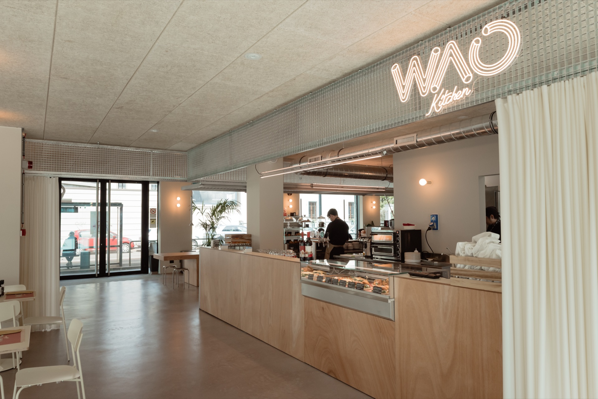
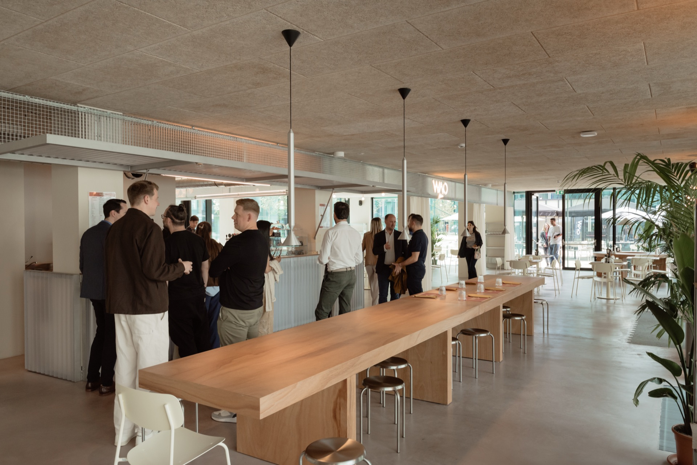
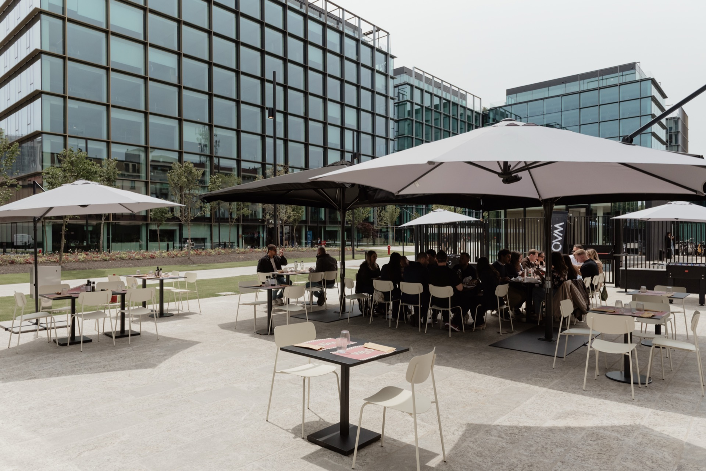
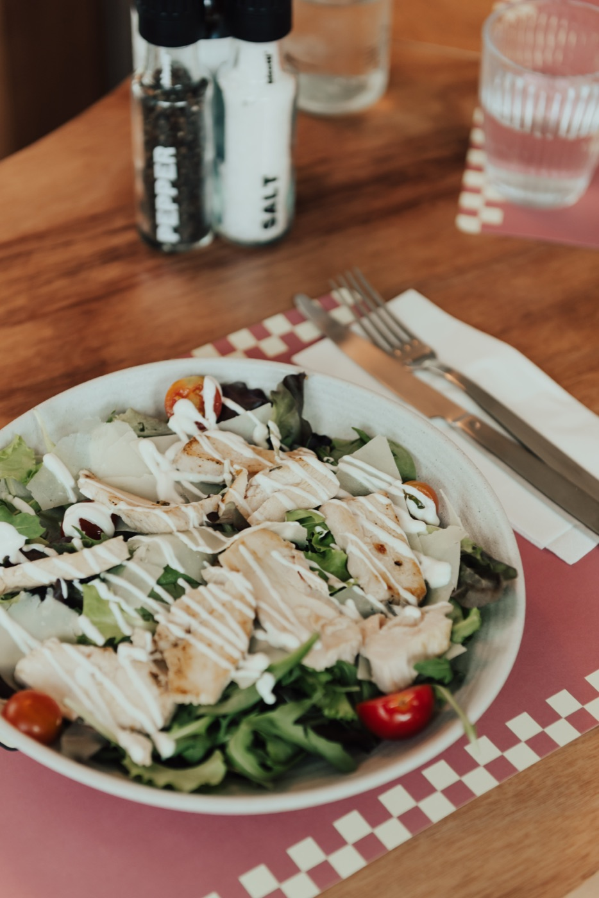
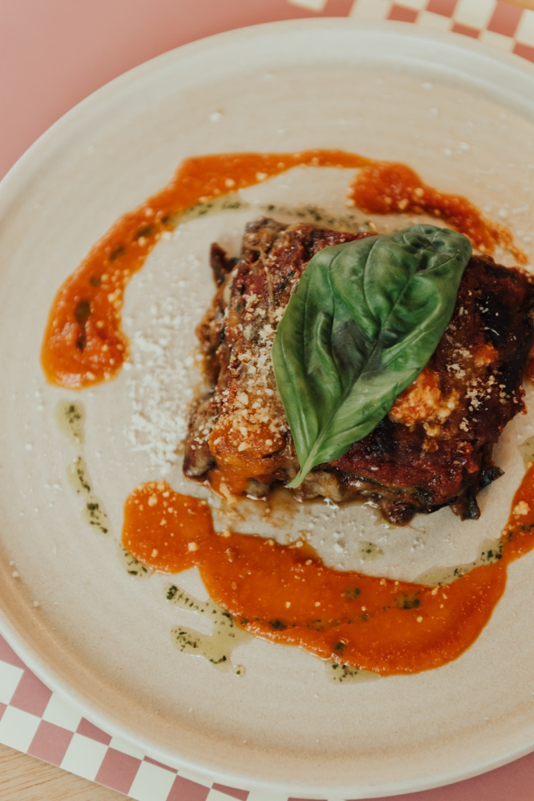
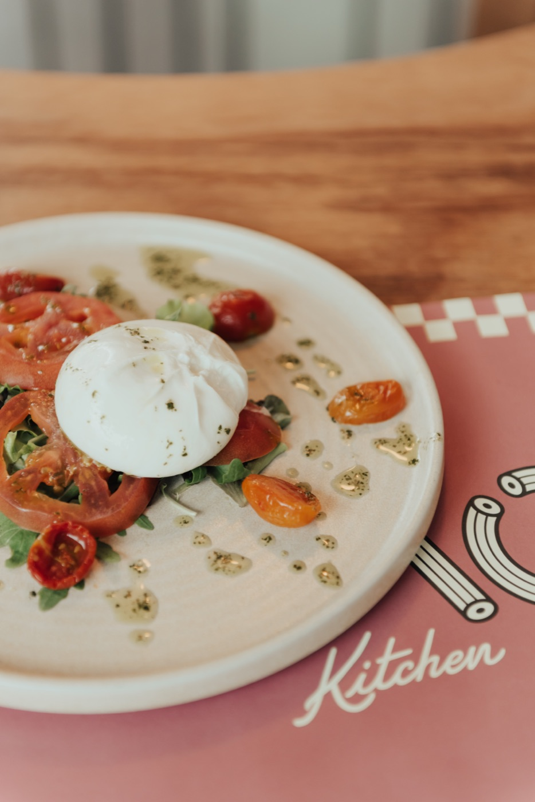

Bar, ristorante ed eventi in Isola
Colazione, pranzo e aperitivo nel mondo WAO — We Are Open
ScopriWAO Kitchen è il bar ristorante di WAO — We Are Open, rete di spazi di coworking, eventi e ristorazione a Milano.
Situato in via Ugo Bassi 8, nel quartiere Isola, all'interno del Bassi Business Park, WAO Kitchen è aperto dal lunedì al venerdì dalle 8 alle 21 per colazioni, pranzi e aperitivi in un ambiente informale, luminoso e aperto alla città.
Lo spazio interno può ospitare fino a 80 persone, mentre il dehors esterno accoglie oltre 70 posti tra tavoli, aree conviviali e biliardini pensati per una pausa, un incontro informale o semplicemente un momento di relax.
Come tutti gli spazi WAO, anche WAO Kitchen ospita eventi, incontri e momenti di community ed è disponibile per eventi privati.



Tramezzini, focacce, insalate, paste, secondi. Cucina semplice, ingredienti veri.



WAO Kitchen è disponibile per cene, aperitivi, presentazioni e momenti di community. Scrivici o chiamaci per organizzare il tuo evento.